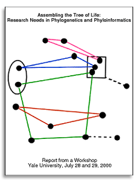
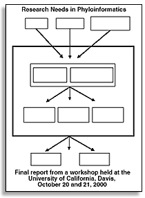
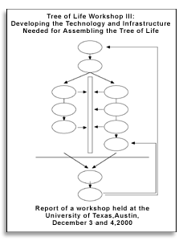

The Tree of Life workshops were sponsored by the NSF and explored the feasibility of a project to reconstruct the tree of life. This site provides links to these workshops, and copies of the reports. The AMNH hosts an overview of the project.
Yale, July 2000
UC Davis, October 20 and 21, 2000
Austin, Texas, December 3-Monday, December 4, 2000
Yale [Original][Local copy]
Davis[Original][Local copy]
Austin [Original][Local copy]